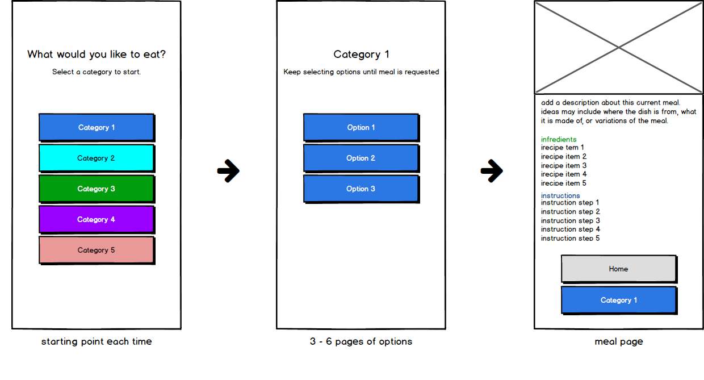
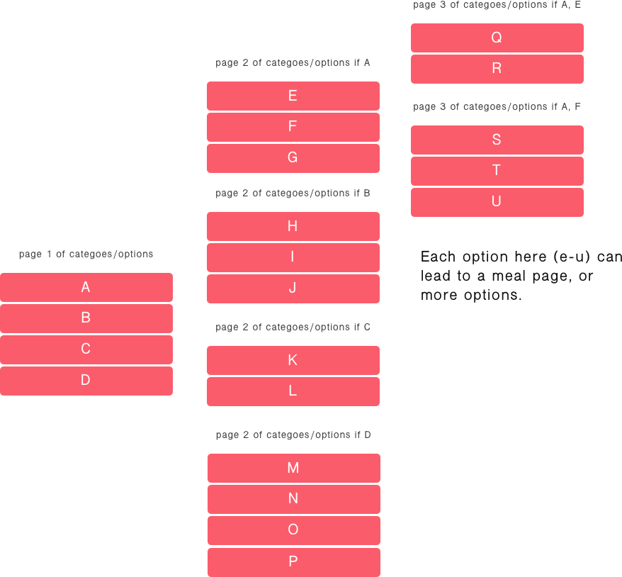

Desc. An app the helps recommend a meal
Role UX/UI Designer
Used HTML, CSS, Sketch, Balsamiq
www.crumyumapp.com
Crumyum is an app that gives you a list of options (things to eat, types of foods, etc.), and then recommends something for you to eat. The end of this process brings users to a page a meal page. On this page, there is a description of the meal, ingredients, and instructions on how to make the meal.
The app is meant to be simple; easy to use, and sort of self explanatory. The main page of the app gives you five main categories to start. From there you will eventually land on a meal page that falls under one of the five main categories.
Crumyum can essentially be used by everyone that wants to learn how to cook, or just wants a meal idea when they're hungry, or getting ready to prepare something to eat.

Option pages are what the user sees before they reach a meal page. Depending on what users select, the can see a varieyu of pages before a meal is recommended. Since we wanted to make the app really simple, the entire process usually takes less than a minute.

The meal page (results) shows a recommended meal based on the options a user chose. The user will then see the meal they landed on, and get some information about it. Users will have all ingredients and instructions allowing them to make the meal if they choose to. Depending on the meal, users will get some addition information as well. Additional information can vary from: prep & cook time, estimated calorie count, and/or serving size. If the meal doesn't suit them, they can simply start the process over, and hopefully find something to eat!